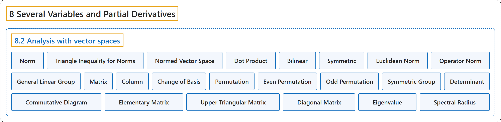

8.2 Analysis with vector spaces
Classification

Glossary
| Term | Definition | 中文翻译 | Source |
|---|---|---|---|
| 8.2 Analysis with vector spaces 向量空间上的分析 |
(No definition) | （无定义） | Lebl, 2026, section 8.2 |
| Norm 范数 |
"If \(X\) is a vector space, then we say a function \(\lVert \cdot \rVert \colon X \to \mathbb{R}\) is a norm if \(\lVert x \rVert \geq 0\), with \(\lVert x \rVert=0\) if and only if \(x=0\). \(\lVert cx \rVert = \lvert c \rvert \, \lVert x \rVert\) for all \(c \in \mathbb{R}\) and \(x \in X\). \(\lVert x+y \rVert \leq \lVert x \rVert+\lVert y \rVert\) for all \(x,y \in X\) (triangle inequality)." | 若 \(X\) 是向量空间，函数 \(\lVert \cdot \rVert \colon X \to \mathbb{R}\) 满足：\(\lVert x \rVert \geq 0\)，且 \(\lVert x \rVert=0\) 当且仅当 \(x=0\)；对所有 \(c \in \mathbb{R}\)、\(x \in X\) 有 \(\lVert cx \rVert = \lvert c \rvert \, \lVert x \rVert\)；对所有 \(x,y \in X\) 有 \(\lVert x+y \rVert \leq \lVert x \rVert+\lVert y \rVert\)（三角不等式），则称它为范数。 | Lebl, 2026, Definition 8.2.1 |
| Triangle Inequality for Norms 范数的三角不等式 |
"\(\lVert x+y \rVert \leq \lVert x \rVert+\lVert y \rVert\) for all \(x,y \in X\) (triangle inequality)." | 对所有 \(x,y \in X\) 有 \(\lVert x+y \rVert \leq \lVert x \rVert+\lVert y \rVert\)（三角不等式）。 | Lebl, 2026, Definition 8.2.1 |
| Normed Vector Space 赋范向量空间 |
"A vector space equipped with a norm is called a normed vector space." | 配备了范数的向量空间称为赋范向量空间。 | Lebl, 2026, Definition 8.2.1 |
| Dot Product 点积 |
"Before defining the standard norm on \(\mathbb{R}^n\), we define the standard scalar dot product on \(\mathbb{R}^n\). For \(x=(x_1,x_2,\ldots,x_n) \in \mathbb{R}^n\) and \(y=(y_1,y_2,\ldots,y_n) \in \mathbb{R}^n\) define \(x \cdot y := \sum_{k=1}^n x_k\, y_k\)." | 在定义 \(\mathbb{R}^n\) 上的标准范数之前，先定义 \(\mathbb{R}^n\) 上的标准数量点积。对 \(x=(x_1,x_2,\ldots,x_n) \in \mathbb{R}^n\) 和 \(y=(y_1,y_2,\ldots,y_n) \in \mathbb{R}^n\)，定义 \(x \cdot y := \sum_{k=1}^n x_k\, y_k\)。 | Lebl, 2026, section 8.2 |
| Bilinear 双线性 |
"Dot product is linear in each variable separately—in more fancy language, it is bilinear." | 点积对每个变量分别是线性的——用更花哨的话说，它是双线性的。 | Lebl, 2026, section 8.2 |
| Symmetric 对称 |
"It is symmetric in the sense that \(x \cdot y = y \cdot x\)." | 它是对称的，即 \(x \cdot y = y \cdot x\)。 | Lebl, 2026, section 8.2 |
| Euclidean Norm 欧几里得范数 |
"Define the euclidean norm as \(\lVert x \rVert := \lVert x \rVert_{\mathbb{R}^n} := \sqrt{x \cdot x} = \sqrt{(x_1)^2+(x_2)^2 + \cdots + (x_n)^2}\)." | 定义欧几里得范数为 \(\lVert x \rVert := \lVert x \rVert_{\mathbb{R}^n} := \sqrt{x \cdot x} = \sqrt{(x_1)^2+(x_2)^2 + \cdots + (x_n)^2}\)。 | Lebl, 2026, section 8.2 |
| Operator Norm 算子范数 |
"Let \(A \in L(X,Y)\). Define \(\lVert A \rVert := \sup \bigl\{ \lVert Ax \rVert : x \in X \text{ with } \lVert x \rVert = 1 \bigr\}\). The number \(\lVert A \rVert\) (possibly \(\infty\)) is called the operator norm." | 设 \(A \in L(X,Y)\)。定义 \(\lVert A \rVert := \sup \bigl\{ \lVert Ax \rVert : x \in X \text{ with } \lVert x \rVert = 1 \bigr\}\)。数 \(\lVert A \rVert\)（可能为 \(\infty\)）称为算子范数。 | Lebl, 2026, Definition 8.2.3 |
| General Linear Group 一般线性群 |
"Let \(GL(X) \subset L(X)\) be the set of invertible linear operators. \(GL(X)\) is called the general linear group, that is where the acronym GL comes from." | 令 \(GL(X) \subset L(X)\) 为可逆线性算子构成的集合。\(GL(X)\) 称为一般线性群，缩写 GL 即由此而来。 | Lebl, 2026, Proposition 8.2.6 |
| Matrix 矩阵 |
"Define the numbers \(a_{i,j}\) via \(A x_j = \sum_{i=1}^m a_{i,j} \, y_i\), and write them as a matrix, which we, by slight abuse of notation, also call \(A\), \(A = \begin{bmatrix} a_{1,1} & a_{1,2} & \cdots & a_{1,n} \\ a_{2,1} & a_{2,2} & \cdots & a_{2,n} \\ \vdots & \vdots & \ddots & \vdots \\ a_{m,1} & a_{m,2} & \cdots & a_{m,n} \end{bmatrix}\)." | 通过 \(A x_j = \sum_{i=1}^m a_{i,j} \, y_i\) 定义数 \(a_{i,j}\)，并把它们写成一个矩阵，稍微滥用记号，也记作 \(A\)：\(A = \begin{bmatrix} a_{1,1} & a_{1,2} & \cdots & a_{1,n} \\ a_{2,1} & a_{2,2} & \cdots & a_{2,n} \\ \vdots & \vdots & \ddots & \vdots \\ a_{m,1} & a_{m,2} & \cdots & a_{m,n} \end{bmatrix}\)。 | Lebl, 2026, section 8.2 |
| Column 列 |
"The $j$th column of the matrix contains precisely the coefficients that represent \(A x_j\) in terms of the basis \(\{ y_1,y_2,\ldots,y_m \}\)." | 矩阵的第 \(j\) 列恰好包含用基 \(\{ y_1,y_2,\ldots,y_m \}\) 表示 \(A x_j\) 的系数。 | Lebl, 2026, section 8.2 |
| Change of Basis 基变换 |
"A linear mapping changing one basis to another is represented by a square matrix in which the columns represent vectors of the second basis in terms of the first basis. We call such a linear mapping a change of basis." | 把一组基变成另一组基的线性映射，由一个方阵表示，方阵的各列是第二组基的向量在第一组基下的表示。这样的线性映射称为基变换。 | Lebl, 2026, section 8.2 |
| Permutation 置换 |
"A permutation \(\sigma = (\sigma_1,\sigma_2,\ldots,\sigma_n)\) is a reordering of \((1,2,\ldots,n)\)." | 置换 \(\sigma = (\sigma_1,\sigma_2,\ldots,\sigma_n)\) 是 \((1,2,\ldots,n)\) 的一种重新排列。 | Lebl, 2026, section 8.2 |
| Even Permutation 偶置换 |
"A permutation is even (resp. odd) if it takes an even (resp. odd) number of transpositions to get from \((1,2,\ldots,n)\) to \(\sigma\)." | 若从 \((1,2,\ldots,n)\) 得到 \(\sigma\) 需要偶数（相应地奇数）次对换，则称该置换为偶的（相应地奇的）。 | Lebl, 2026, section 8.2 |
| Odd Permutation 奇置换 |
"A permutation is even (resp. odd) if it takes an even (resp. odd) number of transpositions to get from \((1,2,\ldots,n)\) to \(\sigma\)." | 若从 \((1,2,\ldots,n)\) 得到 \(\sigma\) 需要偶数（相应地奇数）次对换，则称该置换为偶的（相应地奇的）。 | Lebl, 2026, section 8.2 |
| Symmetric Group 对称群 |
"Let \(S_n\) be the set of all permutations on \(n\) elements (the symmetric group)." | 令 \(S_n\) 为 \(n\) 个元素上所有置换构成的集合（对称群）。 | Lebl, 2026, section 8.2 |
| Determinant 行列式 |
"Let \(A= [a_{i,j}]\) be a square \(n\)-by-\(n\) matrix. Define the determinant of \(A\) as \(\det(A) := \sum_{\sigma \in S_n} \operatorname{sgn} (\sigma) \prod_{i=1}^n a_{i,\sigma_i}\)." | 设 \(A= [a_{i,j}]\) 是 \(n \times n\) 方阵。定义 \(A\) 的行列式为 \(\det(A) := \sum_{\sigma \in S_n} \operatorname{sgn} (\sigma) \prod_{i=1}^n a_{i,\sigma_i}\)。 | Lebl, 2026, section 8.2 |
| Commutative Diagram 交换图 |
"Such a picture is called commutative diagram. In a commutative diagram, following arrows in any way must end up with the same result." | 这样的图称为交换图。在交换图中，沿箭头无论怎样走，结果都必须相同。 | Lebl, 2026, section 8.2 |
| Elementary Matrix 初等矩阵 |
"There are three types of what we call elementary matrices. Let \(e_1,e_2,\ldots,e_n\) be the standard basis on \(\mathbb{R}^n\) as usual. First, for \(j = 1,2,\ldots,n\) and \(\lambda \in \mathbb{R}\), \(\lambda \neq 0\), define the first type of an elementary matrix, an \(n\)-by-\(n\) matrix \(E\) by \(Ee_i := \begin{cases} e_i & \text{if } i \neq j , \\ \lambda e_i & \text{if } i = j . \end{cases}\)" | 我们所说的初等矩阵有三种类型。像通常一样，令 \(e_1,e_2,\ldots,e_n\) 为 \(\mathbb{R}^n\) 的标准基。首先，对 \(j = 1,2,\ldots,n\) 和 \(\lambda \in \mathbb{R}\)，\(\lambda \neq 0\)，定义第一种初等矩阵为 \(n \times n\) 矩阵 \(E\)：\(Ee_i := \begin{cases} e_i & \text{if } i \neq j , \\ \lambda e_i & \text{if } i = j . \end{cases}\) | Lebl, 2026, section 8.2 |
| Upper Triangular Matrix 上三角矩阵 |
"It is sufficient to do row operations until we find an upper triangular matrix, that is, a matrix \([a_{i,j}]\) where \(a_{i,j} = 0\) if \(i > j\)." | 只需做行变换，直到得到一个上三角矩阵，即当 \(i > j\) 时 \(a_{i,j} = 0\) 的矩阵 \([a_{i,j}]\)。 | Lebl, 2026, section 8.2 |
| Diagonal Matrix 对角矩阵 |
"Suppose \(D = [d_{i,j}]\) is an \(n\)-by-\(n\) diagonal matrix, that is, \(d_{i,j} = 0\) whenever \(i \neq j\)." | 设 \(D = [d_{i,j}]\) 是 \(n \times n\) 对角矩阵，即当 \(i \neq j\) 时 \(d_{i,j} = 0\)。 | Lebl, 2026, Exercise 8.2.10 |
| Eigenvalue 特征值 |
"Let \(A\) be an \(n\)-by-\(n\) matrix. A \(\lambda \in \mathbb{C}\) (possibly complex even for a real matrix) is an eigenvalue of \(A\) if there is a nonzero (possibly complex) vector \(x \in \mathbb{C}^n\) such that \(Ax = \lambda x\)." | 设 \(A\) 是 \(n \times n\) 矩阵。若存在非零（可能是复的）向量 \(x \in \mathbb{C}^n\) 使得 \(Ax = \lambda x\)，则 \(\lambda \in \mathbb{C}\)（即使对实矩阵也可能是复数）称为 \(A\) 的特征值。 | Lebl, 2026, Exercises 8.2 |
| Spectral Radius 谱半径 |
"The number \(\rho(A) := \sup \bigl\{ \lvert \lambda \rvert : \lambda \text{ is an eigenvalue of } A \bigr\}\) is the spectral radius of \(A\)." | 数 \(\rho(A) := \sup \bigl\{ \lvert \lambda \rvert : \lambda \text{ is an eigenvalue of } A \bigr\}\) 是 \(A\) 的谱半径。 | Lebl, 2026, Exercises 8.2 |
References
Lebl, J. (2026). Basic analysis I & II: Introduction to real analysis (May 22, 2026 edition). Retrieved October 29, 2026, from https://www.jirka.org/ra/html/